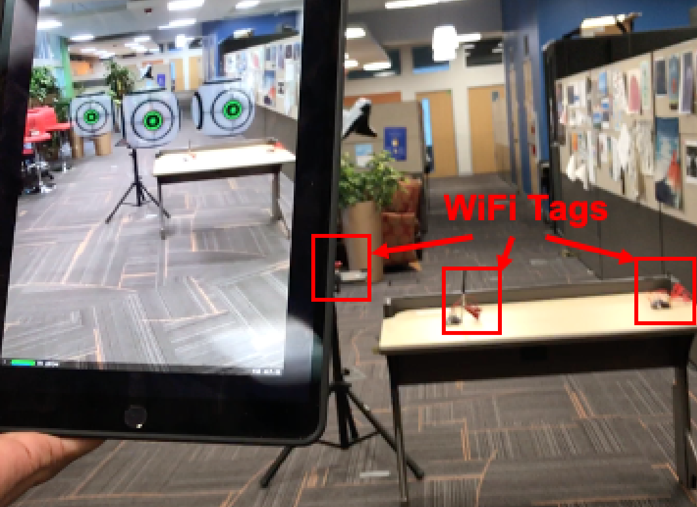

Project TagFi: Locating Ultra-Low Power WiFi Tags Using Unmodified WiFi Infrastructure

Tag localization is crucial for many context-aware and automation applications in smart homes, retail stores, or warehouses. While custom localization technologies (e.g RFID) have the potential to support low-cost battery-free tag tracking, the cost and complexity of commissioning a space with beacons or readers has stifled adoption. In this paper, we explore how WiFi backscatter localization can be realized using the existing WiFi infrastructure already deployed for data applications. We present a new approach that leverages existing WiFi infrastructure to enable extremely low-power and accurate tag localization relative to a single scanning device. First, we adopt an ultra-low power tag design in which the tag blindly modulates ongoing WiFi packets using On-Off Keying (OOK). Then, we utilize the underlying physical properties of multipath propagation to detect the passive wireless reflection from the tag in the presence of rich multipath propagations. Finally, we localize the tag from a single receiver by forming a triangle between the tag reflection and the LoS path between the two WiFi transceivers. We implement TagFi using a customized backscatter tag and off-the-shelf WiFi chipsets. Our empirical results in a cluttered office building demonstrate that TagFi achieves a median localization accuracy of 0.2m up to 8 meters range.
Video
Citation
- TagFi: Locating Ultra-Low Power WiFi Tags Using Unmodified WiFi Infrastructure, Elahe Soltanaghaei, Adwait Dongare, Akarsh Prabhakara, Swarun Kumar, Anthony Rowe and Kamin Whitehouse, UbiComp 2021 PAPER